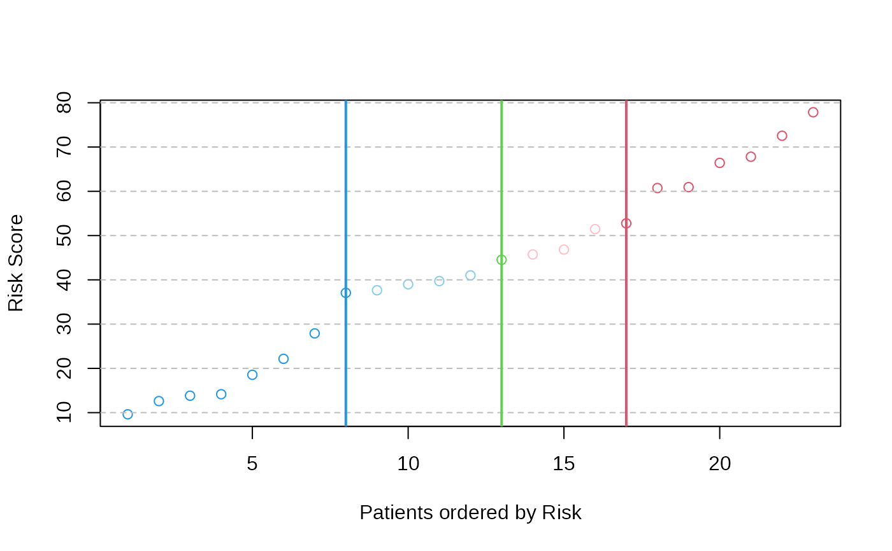

predict.patientRisk
predict.patientRisk.RdFunction to predict the risk for new patients considering the gene expression for a subset of genes and the multivariate Cox regression model trained by function patientRisk, it may be used to predict over a single patient.
Arguments
- model.fit
A list containing the pre-fitted model and necessary parameters for risk prediction, including the optimal lambda value, risk thresholds, and plot values given by *patientRisk()* function.
- mExpr.testData
A data frame for an independent set of patients representing the gene expression data, where each row is a gene and each column is a sample. The genes must be the same subset of genes (as rows) considered in the training of the Cox model using patientRisk function. *colnames(mExpr)* corresponds to the sample names and *rownames(mExpr)* to the gene names.
Details
A risk score is estimated for new patients considering the optimal regularized multivariate Cox regression model trained by the function patientRisk. The risk score is normalized to be interpretable in the scale (0-100). The function generates a risk plot for new patients and stratifies them in three risk groups (low, intermediate, high) considering the thresholds learned by function patientRisk.
Value
This function generates one plot with the risk for new patients scaled to be interpretable in the range 0-100. Low risk pattients are shown in blue while high risk patients in red. If only the expression profile of a single patient is provided, the function predicts the risk and classifies the sample into one of the three possible risk groups. The function also returns a list with the following objects:
- risk_score
A vector with the unscaled risk score for new patients estimated by a multivariate Cox regression model.
- scaled_risk_score
A vector with the risk score for the new patients scaled to be interpretable in the range 0-100.
References
Martinez-Romero, J., Bueno-Fortes, S., Martín-Merino, M. et al. (2018) Survival marker genes of colorectal cancer derived from consistent transcriptomic profiling. BMC Genomics 19 (Suppl 8), 857 . doi:10.1186/s12864-018-5193-9
Santiago Bueno-Fortes, Alberto Berral-Gonzalez, José Manuel Sánchez-Santos, Manuel Martin-Merino, Javier De Las Rivas (2023) Identification of a gene expression signature associated with breast cancer survival and risk that improves clinical genomic platforms, Bioinformatics Advances, Volume 3, Issue 1, vbad037, doi:10.1093/bioadv/vbad037
Examples
data(predictPatientRisk)
# Generate the validation set, mExprs_testData if necessary.
# Vector of genes (same ones used in Cox model training)
genes <- rownames(mExprSelectedGenes)
# Simulate expression data
num_samples <- 20
set.seed(5)
mExprs_testData <- matrix(rnorm(length(genes) * num_samples, mean = 10, sd = 3),
nrow = length(genes), ncol = num_samples)
# Assign row names (genes) and column names (samples)
rownames(mExprs_testData) <- genes
colnames(mExprs_testData) <- paste0("Sample", 1:num_samples)
set.seed(5)
risk_prediction_validation_set <- predict.patientRisk(multivariate_risk_predictor, mExprs_testData)

# Example for single patient prediction: Patient fourth is selected.
mExprs_testSingleData <- data.frame(mExprs_testData[, 4])
colnames(mExprs_testSingleData) <- colnames(mExprs_testData)[4]
# Risk prediction for the optimal subset of genes selected by patientRisk function
set.seed(5)
risk_prediction_one_patient <- predict.patientRisk(multivariate_risk_predictor, mExprs_testSingleData)
#> Normalized patient Risk (0 100): 27.9017675117161
#> The patient is classified as Low Risk
#> Low Risk interval: (0, 37.0600635839135)
# Normalized patient Risk (0 100): 27.9017675117161
# The patient is classified as Low Risk
# Low Risk interval: (0, 37.0600635839135)